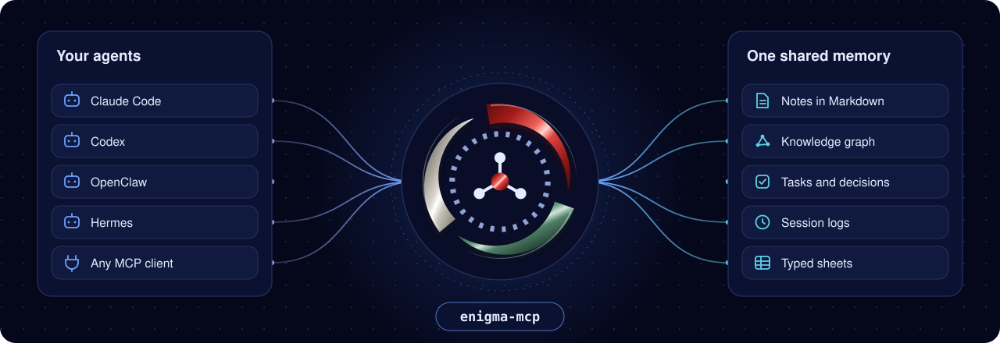
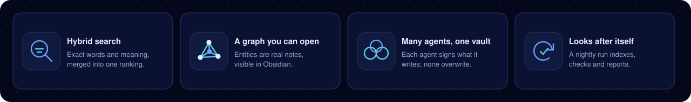

Search
By words and by meaning
A keyword ranking and an embedding ranking are merged into one result list.
 Back to work
Back to workAI systems, 2026
One memory for all your AI agents
Kept as plain notes in your Obsidian vault

The problem
What Claude Code worked out yesterday is unknown to Codex today, and unknown to Claude Code itself tomorrow.
Enigma gives every agent one place to remember: a folder of Markdown notes that you already open in Obsidian. It is a single Rust binary that sits in front of that folder and speaks the Model Context Protocol.
Every agent that connects gets the same 25 tools: search the vault, read and write notes, follow the knowledge graph, log a session, add a task. The notes stay yours. You can read, edit, move and back them up like any other files.
What it does

Search
A keyword ranking and an embedding ranking are merged into one result list.
Graph
Entities are ordinary notes, so Obsidian’s graph view shows them.
Rules
Agents write inside one folder of the vault. Anything else needs an explicit confirmation.
Upkeep
One nightly run indexes new notes, suggests filing, checks health and reports.
Caches
Every cache lives outside the vault and can be deleted and rebuilt from the notes.
Sharing
Each agent runs its own server process under its own name. New notes use a create-only write, so exactly one writer wins, and every note says who wrote it.
The graph
How search works
A search walks the vault and keeps the notes that match any tag or folder filter. A BM25L keyword ranking and an embedding-similarity ranking then score the same candidates. Each is cut to its best 50, and the two lists are merged with reciprocal rank fusion.
Vectors written by Obsidian’s Smart Connections plugin are reused while they are fresh. Otherwise Enigma embeds the note itself with the same model, bge-micro-v2 at 384 dimensions.
Measured
Figures from the project’s README.
Benchmark
Measured on a real vault of 1,570 notes and 1,240 graph entities, on an Apple M4, in the read-only profile. Tool figures are the median and the 95th percentile over repeated calls; start-up figures are the median and the slowest of five runs.
| Operation | Median | Slow end |
|---|---|---|
| Start the server and answer its first message | 30 ms | 60 ms |
| Start the server and answer the first search | 0.81 s | 1.04 s |
| Search by words and meaning, 272 queries | 260 ms | 524 ms |
| Search with linked context | 257 ms | 341 ms |
| Gather the facts for a digest | 95 ms | 133 ms |
| Select notes by their properties | 36 ms | 81 ms |
| Notes that link to a note | 47 ms | 62 ms |
| Most recently changed notes | 11 ms | 13 ms |
| Graph lookups | under 5 ms | under 10 ms |
| Read one note | 0.1 ms | 0.3 ms |
| Nightly run as a preview, whole vault | 1.4 s | one run |
| Embed every note from nothing | 44 s | one run |
In the same run every one of the 1,570 notes was read back without an error, including notes with Windows line endings, an empty note and file names outside plain English letters.
Install
The quick way: give an AI agent the repository’s link and your vault’s path. The repository’s AGENTS.md tells it which commands to run, which to preview first, and where to stop and ask you.
Open the repository (opens in a new tab)By hand, on macOS or Linux
You need a Rust toolchain (1.85 or newer), an Obsidian vault, the claude or codex command on your path, and the embedding model in your local Hugging Face cache.
Clone and build.
git clone https://github.com/Rayhanson-Git/enigma
cd enigma
cargo build --releaseFetch the embedding model once: three files, 34 MB.
pip install -U huggingface_hub && hf download TaylorAI/bge-micro-v2 config.json tokenizer.json model.safetensorsInstall the vault guides and folders. Existing files are never overwritten.
./target/release/enigma-mcp install-conventions "/path/to/vault"Register Enigma with Claude Code. This form only previews what would change.
ENIGMA_VAULT_PATH="/path/to/vault" ./target/release/enigma-mcp mcp-sync --checkInstall the skills and the session hooks.
./target/release/enigma-mcp skill-sync && ./target/release/enigma-mcp hook-sync --installBuild the graph. Repeat until the output shows "remaining": 0.
ENIGMA_EXTRACTOR=claude ./target/release/enigma-mcp index "/path/to/vault"Then, in a new agent session, call the onboard tool first. The README has the Windows steps and the settings for Codex, OpenClaw, Claude Desktop and other clients.
Where it stands
Version 1.3.0 is used daily on one private vault of about 1,570 notes, with four agent harnesses connected at once. Every push is linted, tested and built on macOS, Linux and Windows.
Daily use so far has been on macOS only. Windows support is new in 1.3.0 and has not yet been used day to day on a Windows PC, and scheduled maintenance is macOS only.
Read the code
MIT license. Built and tested on macOS, Linux and Windows.